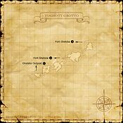
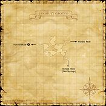

Description
Yughott Grotto is a dungeon in Ronfaure.
Map

Involved in Quests / Missions
| Quest / Mission | Type | Starter | Location |
|---|---|---|---|
| Blackmail | General | Dauperiat | Northern San d'Oria (pos=I-10) |
| Signed in Blood | General | Sobane | Southern San d'Oria (pos=D-6) |
| Warding Vampires | General | Maloquedil | Northern San d'Oria (pos=J-8) |
Notorious Monsters
| Name | Level | Drops | Steal | Family | Spawns | Notes |
|---|---|---|---|---|---|---|
| Ashmaker Gotblut | 17-18 | Hermit's Wand Priest's Robe | Beastcoin |  OrcsImage source OrcsImage source | — | A, L, S, Sc |
Regular Monsters


Maps

Story walkthroughs in this area
| Story | Mission / quest |
|---|---|
| WotG S-12 | Face of the Future |
| AMK 2 | Drenched! It Began with a Raindrop |
References
External references describe their own server or retail rules. Documented Zenith changes take precedence.
Map credits: Map 1 — HorizonXI Wiki · Map 2 — HorizonXI Wiki. Original game maps © SQUARE ENIX; redrawn maps retain the credited authorship and license.


Additional level-75 reference




|
The Orcs once used Elvaan slaves to dig this tunnel, which was originally intended to lead all the way under the walls of the San d'Orian citadel. However, the short-tempered Orcs soon found that their plan would be far more difficult to carry out than they previously thought, so they simply gave up their pursuit of the project. |
Connecting Areas
- Fort Ghelsba at (K-5, H-7, F-7)
- Horlais Peak at (J-9, K-6)
- Ghelsba Outpost at (E-9)
- Escapes to: West Ronfaure (E-4)
Involved in Quests/Missions
| Quest | Type | Starter | Location |
| Blackmail | General | Dauperiat | Northern San d'Oria (I-10) |
| Signed in Blood | General | Sobane | Southern San d'Oria (D-6) |
| Warding Vampires | General | Maloquedil | Northern San d'Oria (J-8) |
Mining
|
Coffer/Chest Contents
Fishing
| ||||||||||||||||||||||||||||||||||||||||
Notorious Monsters Found Here
|
Name |
Level |
Drops |
Steal |
Family |
Spawns |
Notes | |||||||
| Ashmaker Gotblut | 17 - 18 | Orc | A, L, S, Sc | ||||||||||
|
HP = Detects Low HP; M = Detects Magic; Sc = Follows by Scent; T(S) = True-sight; T(H) = True-hearing JA = Detects job abilities; WS = Detects weaponskills; Z(D) = Asleep in Daytime; Z(N) = Asleep at Nighttime | |||||||||||||
Mobs Found Here
Adapted from Eden Wiki: Yughott Grotto · Contributors and history · CC BY-SA 4.0. Revision 45415. Layout, links and optional background text adapted for Zenith.